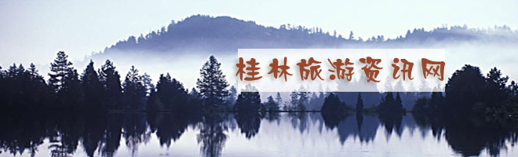
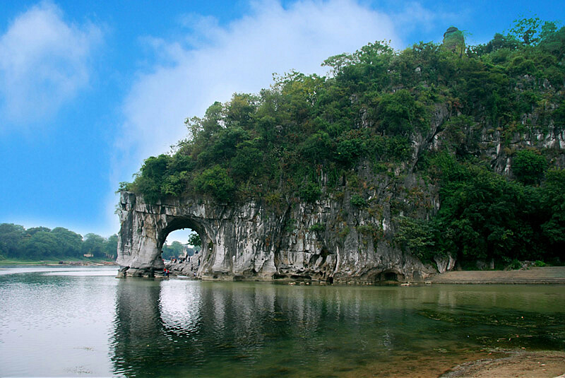

|  |
|  |
桂林山水 桂林处处皆为胜景，漓江山水堪称其中的典范。听闻桂林山水甲天下，阳朔堪称甲桂林”的佳话，我们选择了从阳朔到桂林的路线，逆流畅游漓江。船驶出不久，远远地见到一座峰顶悬挂着一轮初日，缕缕阳光从云中穿过，江中波光粼粼，与群山倒影交相辉映，令人疑是到了仙境。如果说北方的山是豪迈﹑厚重的，那么桂林的山则显得妩媚﹑秀美。玉女峰婷婷玉立,巧梳云鬓;望夫崖凝神远眺,深情守候;赶考的书童，跳龙门的鲤鱼，盘旋的田螺，绿洲的骆驼，形态各异，变化万千，令游人目不暇接。画山的九匹马，在导游的引导与娓娓讲述中，更是令桂林的山出神入化到了极点，使游人真切地领略到了桂林山水的神奇﹑秀美。 如果说桂林的山是鸟鸣山更幽,那么，桂林的水则是清澈透明﹑绿得欲滴。俯首看去，江水泛着细细的涟漪，玉塔微澜，水色晶莹剔透，加之两岸竹林婀娜多姿，山水相映成趣，怎么看都是一幅长长的山水画，凝重中透露着灵动之气，真是“舟行碧波上，人在画中游”。 |